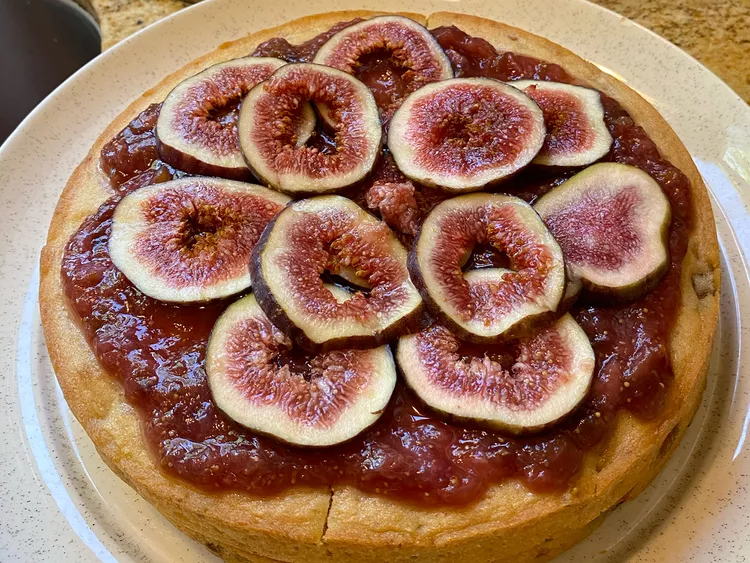

Fig Cake

Description
This beautiful fig cake has a middle layer of homemade fig preserves. It's delicious on its own or with a dollop of whipped cream.
Ingredients
- 2 cups all-purpose flour
- 2 teaspoons baking powder
- ½ teaspoon salt
- 1 cup white sugar
- ¼ cup butter, softened
- 1 large egg
- 1 cup fat-free evaporated milk
- 1 teaspoon vanilla extract
- ¼ teaspoon almond extract
- 1 cup chopped fresh figs
- 2 cups chopped fresh figs
- ¼ cup packed brown sugar
- ¼ cup water
- 1 tablespoon lemon juice
Steps
- Preheat the oven to 350 degrees F (175 degrees C). Spray two 8-inch round cake pans with cooking spray.
- To make the fig cake: Sift flour, salt, and baking powder together in a medium bowl; set aside.
- Beat sugar and butter together in a large mixing bowl with an electric beater until fluffy. Add egg and beat well. Add flour mixture alternately with evaporated milk. Fold in vanilla, almond extract, and 1 cup chopped figs.
- Spoon cake batter evenly into the prepared cake pans. Bake in the preheated oven until a toothpick inserted into the center comes out clean, 25 to 30 minutes. Cool cake layers on a wire rack.
- To make the fig filling: Combine 2 cups chopped figs, brown sugar, water, and lemon juice in a saucepan. Bring to a boil. Reduce heat to a simmer and cook until thickened, about 20 minutes. Spread thinly between cooled cake layers and on top.